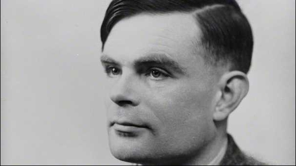

Alan Turing, Father of Modern Computer Science
1912: Alan Mathison Turing born in Maida Vale, London, to Ethel Sara Turing (nee Stoney) and Julius Mathison
Turing.
1926: Alan becomes a pupil at Sherborne School in Dorset. Alan is not interested in their traditional
classical education as he really wants to spend his time doing Science and Mathematics
1927: Alan becomes deeply interested in the work of Albert Einstein and is able to develop work done by
Einstein based on a questioning of Newton's Laws of Motion.
1934: Alan becomes an undergraduate at King's College, Cambridge to study Mathematics (1931). He enjoys
university and is highly successful. He graduates with distinction.
1938: Alan goes to Princeton University in America to study mathematics and is awarded a PhD.
1939: September - Alan is asked to join the Government Codes and Ciphers School and arrives at Bletchley
Park the day after war is declared.
1945: At the end of the war, Alan Turing is awarded the OBE for his wartime services.
1950: Alan publishes 'Computing Machinery and Intelligence' in which he develops the Turing Test, an attempt
to define a standard for a machine to be called intelligent. The paper will become very famous.
1954: June 8th - Alan's body is found in his home in Wilmslow, Cheshire. The post-mortem finds that his
death had been caused by poisoning. A half-eaten apple is found next to him laced with cyanide. His body is
cremated at Woking crematorium.